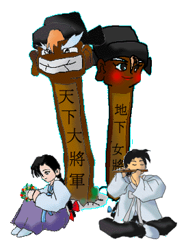

|

| 해 맑음 : 어서오세요. 저희 마을에 오신것을 환영합니다. | |
| 저는 해맑음이라고 해요. 방년 16세에 꽃다운 나이죠. | |
| 지금 꽃 목걸이를 만들고 있는데, 쉽지가 않아요. | |
| 옆에서 피리만 불고있는 사내 녀석 있죠 ? 그 녀석은 신가람이라고 하는데요. | |
| 그 애한테 이걸 선물할려고 해요. 근데... 항상 녀석은 제 맘을 몰라주는 거 있죠. | |
| 뭘 물어도 씩 웃기만 하고, 좀체 진지한 맛이 없는 녀석이에요. | |
| 학교에서 공부도 꽤 하는걸 보아, 바보는 아닌데.. 취미라고는 피리 불기 밖에 없고.. | |
| 제 뒤에 있는게 뭐냐구요 ? 우리 마을을 지키는 수호신이에요. | |
| 잡귀들을 쫓기위해 세워 놓은.. 보통 장승이라고 부르죠. | |
| 촌장님은 해커를 막기위해서 세워 놓았다고 했는데요. | |
| 근데.. 해커가 뭐죠 ? | |
| 저희 마을을 한번 쭉 둘러보세요. 다른 마을 사람들을 만나실수 있으실거에요. | |
| 아참. 그리고, 저희 마을은 저희 촌장님이 만드신거에요. | |
| 그 분도 한번 만나보세요. | |